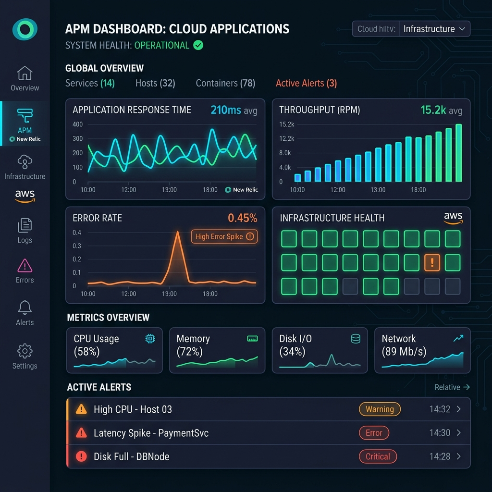

About Me
I am a skilled DevOps & SRE Engineer with over three years of experience in automating cloud infrastructure, orchestrating containers, and setting up high-performance observability pipelines. I specialize in AWS, Terraform, New Relic, and Docker. Certified with JLPT N1, I operate effectively in fast-paced professional Japanese business environments, bridges engineering requirements, and designs high-availability architectures.
Senior DevOps & SRE Engineer
Expertise in AWS, Infrastructure as Code, CI/CD Pipelines & Monitoring.
- Certifications: JLPT N1 / AWS SAA / ITIL
- GitHub: https://github.com/OICjangirrahul
- Phone: 080-7005-5953
- City: Osaka, Japan
- Birthday: 5 Oct 1996
- Degree: Bca(Pursuing)
- Email: jangirurafuru@gmail.com
I am highly dedicated to system reliability, automation, and optimizing release speeds. By introducing modular Terraform architectures, containerizing microservices, and configuring real-time alert filters via New Relic and CloudWatch, I help development teams operate at maximum efficiency while maintaining 99.9% application uptime.
Technical Skills
My core technical expertise spans cloud infrastructure design, automation scripts, continuous integration pipelines, and observability toolsets.
Resume
Professional milestones, education history, and industry-standard SRE & cloud certifications.
Professional Certifications
AWS Certified Solutions Architect – Associate (SAA)
Amazon Web Services
Validates expertise in designing and deploying secure, robust, and cost-efficient cloud architectures on AWS.
ITIL Foundation Certification
AXELOS
Validates core concepts of IT Service Management (ITSM), incident resolution pipelines, SRE operational workflows, and continuous system enhancement lifecycle.
Japanese Language Proficiency Test (JLPT) N1
JEES / The Japan Foundation
Highest level of Japanese language proficiency, proving fluent professional communication capability in technical business settings.
Education
Bachelor of Computer Applications (BCA)
2024 - 2027
Mangalayatan University, UP, India (Online)
Focusing on system design patterns, object-oriented concepts, structural databases, and networking protocols.
IT Technical Department Diploma
2020 - 2022
Osaka Information and Computer Science College, Osaka, Japan
Studies in systems programming, data structures, network security, database administration, and algorithms. Awarded a **medal for academic excellence** and received the **JASSO Scholarship** for outstanding performance.
Japanese Language Course
2018 - 2020
First Study Japanese Language School, Osaka, Japan
Bilingual training in advanced Japanese grammar, business communications, and social etiquette.
Professional Experience
System Engineer (DevOps & SRE)
Oct 2023 - Present
PayStorage Co., Ltd. (Center Mobile Co., Ltd.), Osaka, Japan
- Migrated and enhanced a high-volume SIM card sales management system, improving overall reliability and security.
- Adopted Hexagonal Architecture using **Golang (Gin)** and **Node.js** to decouple core domain logic from infrastructure adapters.
- Automated AWS cloud resources (ECS/Fargate, Lambda, API Gateway, S3, Cognito, RDS, DynamoDB, CloudWatch) provisioning using **Terraform** and CloudFormation.
- Implemented real-time APM monitoring dashboards and custom metric filters using **New Relic** and CloudWatch.
- Configured a serverless event pipeline utilizing CloudWatch logs, SQS queues, and AWS Lambda to router fatal errors to Microsoft Teams instantly.
- Structured end-to-end GitOps pipelines on GitHub Actions to automate container builds (Docker), code linting (Super-Linter), testing, and rollback deployments.
Programmer (Backend & Infrastructure)
Apr 2022 - Oct 2023
AppTime Inc., Osaka, Japan
- **Caregiving Product Recommendation App** (Jun 2023 – Oct 2023): Built secure REST APIs in Laravel, managed MySQL schemas, implemented automated PDF generation, and automated staging builds via GitHub Actions.
- **Roulette Notification System** (Oct 2022 – Dec 2022): Developed a scalable push notification system utilizing **Firebase Cloud Messaging (FCM)** and Laravel. Automated server deployment to AWS EC2 using GitHub Actions and rsync.
- **Multi-Client Systems**: Managed deployment workflows to AWS (EC2, S3, CloudFront) and optimization of SQL Server and MySQL databases for multiple web products.
SRE & DevOps Case Studies
Practical demonstrations of infrastructure as code, automated pipelines, and cloud observability solutions.
